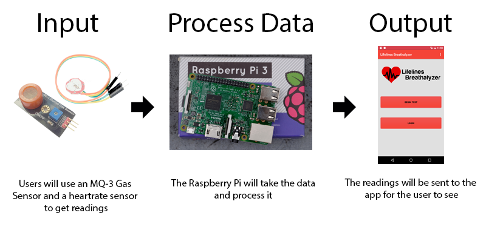

Lifelines: Breathalyzer Build Instructions
By: Ryan Do
Introduction
Welcome to my build instuctions for the Lifelines: Breathalyzer. This page will give you instructions and help you to build your
very own breathalyzer. This is an IoT project that my project members, Eugene Oliver, Adriene Almacen and I decided do. By doing this
project, we aim to provide a portable breathalyzer that you can make yourself to help combat drunk driving and the accidents caused by
it. When people are drunk, some decide that they aren't as bad as it really is, and think its okay to drive home. By using this, users
can see what their blood alcohol level is and are given alternative options depending if they are over the limit or not. Users can also
measure their heart rate with the heartrate sensor.

Bill of Materials/Budget
Below is a list of the materials I used for this project. Please note that for the Raspberry Pi and Humber Parts Kit, you don't need
to get the whole kit like I did. You can choose the basic kit or buy the Raspberry Pi, SD card, and case separately at a much lower cost.
For the PCB Kit, it paid as part of my tuition, but the parts are there and estimated at around $40. Alternatively, you could just buy
an Analog to Digital converter like the MCP3008 - 8-Channel 10-Bit ADC.
| Item |
Qty. |
Cost |
Supplier/Part Number |
| CanaKit Raspberry Pi 3 Ultimate Starter Kit |
1 |
$119.99 |
Amazon.ca - B01CCF9BYG |
| OSEPP MQ-3 Alcohol Gas Sensor |
1 |
$11.95 |
Amazon.ca - B01ISMV6G8 |
| Sparkykit XD-58C Heart Rate Sensor |
1 |
$18.99 |
Amazon.ca - B01AUVMFIS |
| Humber Electronics Parts Kit |
1 |
$119.99 |
Humber College |
PCB Kit
- PCB Board
- Resistors
- Capacitors
- Solder
- LED
- Transistors
- PCF8591 - 8 BIT I2C ADC & DAC
|
1 |
~$40.00 |
Humber College |
| Soldering Iron |
1 |
~$20.00 |
Humber College |
| Total Cost: |
|
$330.93 |
|
Time Commitment
Since this project was done for my 5th semster Computer Engineering Technology program, the whole project was complated in about 15 weeks
due to other courses and projects during the year. Below is a break down of how long each part of the project took me. The project is
going to take you a lot less time as I have given you set instructions in this build log to follow.
| Task |
Approximate Time Taken |
| Searching and ordering parts |
1 hour |
| Delivery of parts |
2 weeks |
| Setting up/updating the Raspberry Pi |
2 hours |
| Soldering the custom PCB |
1 hour |
| Testing for shorts/troubleshooting the PCB |
3 hours |
| Writing the code to get readings from the sensors |
2 hours |
| Testing/calibrating the sensors |
2 hours |
| Project setup/power up |
5 minutes |
Raspberry Pi Setup
To setup your Raspberry Pi, you will need:
- A Computer
- Micro SD Card Reader
- Rasbperry Pi
- Power Cable
- Monitor
- HDMI Cable
- 8GB Micro SD Card
- USB Keyboard/Mouse
Start by plugging in your micro SD card to your computer and downloading NOOBS from here.
Format your micro SD card as FAT and extract the contents of the ZIP file to the root directory of your SD card. After thats done, remove the micro
SD card from your computer and insert it into your Raspberry Pi. Connect your Pi to monitor using an HDMI cable, then connect the USB mouse and keyboard.
On the first boot, NOOBS will ask you which OS to install, it's best to choose Raspbian. After it is done installing and has successfully booted,
connect it to the internet either by ethernet or WiFi. Open up the terminal and run the following command:
sudo apt-get update
This will make sure your Rasperry Pi is updated to the latest version and patch any security holes. Next run:
sudo raspi-config
This will show a menu where you can configure your Pi. Use the arrow keys to go down and select "Advanced Options", then go down to I2C and enable it.
Now, your Raspberry Pi should be set up and ready to go to the next step.
PCB/Soldering
The PCB was provided by Humber College which includes an Analog to Digital Converter and a Real Time Clock which works with the Rasperry Pi.
Below I have included the link to download the EAGLE PCB Design sotware and the schematic and board files for the PCB. The PCB contains:
- 2x Bipolar Junction Transistors
- 1x LED
- 1x 40 Pin GPIO Header
- 1x 1K Ohm Resistor
- 2x 3.9K Ohm Resistors
- 2x 4.7K Ohm Resistors
- 4x 100nF Capacitors
- 2x 4 Pin Headers
- 1x 5 Pin Header
If this is your first time soldering, here is a video on the basics of soldering.
Video
EAGLE PCB Design
Download Schematic File
Download Board File
Below is an image of the board file and the final PCB when it is all soldered.

Mechanical Assembly
After you have your PCB is all soldered and you have checked for shorts, now its time for assembly. With the Raspberry Pi off, connect the
PCB you soldered to the GPIO headers on the Raspberry Pi. Take your PCF8591 - 8 BIT I2C ADC & DAC and plug it into the 4 pin header where it says ADC on the board.
Next, connect your MQ-3 alcohol gas sensor and heartrate sensor to VCC and ground and then the signal to AIN1 and AIN2 of the ADC.
Power Up
Once everything is connected and wired properly, go ahead and power up and boot the Raspberry Pi. To check if the ADC is being detected, open up the terminal
and run the following code:
i2cdetect -y 1
You should see a table with the number 48 showing. If not, then there is something wrong with your PCB and you should recheck it and see where the problem is.
If everything is fine, you're ready to run the code to get data from the sensors. Below, I have included my python code to get the readings. Create a file
with a ".py" extension and edit it with a text editor. Copy the code below and open up the terminal. You can run the file by using the python filename.py
command. You should then see the readings come up on the screen in the terminal.
# Ryan Do - N01044391
# November 21, 2016
# Lifelines: Breathalyzer
import time
import RPi.GPIO as GPIO
GPIO.VERSION
GPIO.setmode(GPIO.BOARD)
GPIO.setup(11,GPIO.OUT)
GPIO.setup(12,GPIO.OUT)
from smbus import SMBus
bus = SMBus(1)
#read the sensors given the pin
def read_ain(i):
global bus
bus.write_byte(0x48, i)
bus.read_byte(0x48)
bus.read_byte(0x48)
return bus.read_byte(0x48)
while(True):
alcohol = read_ain(2)*0.001 #read the alcohol sensor on pin 2
heartrate = read_ain(1) #read the heartrate sensor on pin 1
print "-------------------------\n"
print("Alcohol Sensor: {0:.3f}%".format(alcohol)) #print alcohol reading
#turn on the LED when alcohol level is above 0.08%
if(alcohol>0.08):
GPIO.output(11,0)
GPIO.output(12,1)
else:
GPIO.output(11,1)
GPIO.output(12,0)
print("Heart Rate Sensor: {0:.0f} BPM\n".format(heartrate)) #print heartrate reading
time.sleep(1)#update every 1 second
Unit/Production Testing
As there are only 2 sensors in this project, there's not a lot of unit testing to be done. You can comment out the heartrate code to test for alcohol levels and
vice versa. To get a reading from your alcohol sensor, you can either get drunk and blow on the sensor or get something that contains alcohol such as rubbing alcohol
or beer and put it near the sensor. You should start seeing the number rise and fall after you remove the alcohol. To test the heartrate sensor, simply put your thumb
on the light and wait for a few seconds. The reading should start showing a low number such as 11 or 12, and then jump up to your heartrate. After you let go, the
number should jump up above 200 and go back down. You can also change the value in which the LED turns on to a lower level to make sure that it works.
Conclusion
By following this guide, you should be able to successfully reproduce this project and have the sensors reading alcohol level and your heart rate. Everything
you need should be available to you on this page. You can visit my github repository here if you
want to take a look at the files.